Формирование изделий. Фурнитура.

Основными конструктивными элементами корпусной мебели являются корпус, опоры, двери, ящики или полуящики, полки. Для сборки и оборудования изделий используются лицевая фурнитypа, зеркала, стекла, лотки и др.
В мебельной промышленности для изготовления щитовых элементов в качестве конструкционного материала используются древесностружечные плиты марок П-1 и П-2. При сборке корпуса из щитовых элементов толщиной 10 мм технологический свес (платик) для корпусов всех типов не должен превышать 2 мм. При большей толщине щитов (до 18 мм) размер платика изменяется так, чтобы проемы оставались постоянными, т. е. чтобы размеры элементов по длине и ширине не изменялись при всех схемах формирования корпусов.
Для сведения отметим, что в промышленности приняты следующие размеры изделий: глубина корпуса – 272, 332, 416, (432), 560, (580) мм; размеры проемов корпуса по ширине – 384, 408, 528, 802, 850, 1090, 1220, 1292, 1364, 1412, 1508, 1532, 1652 мм; по высоте – 300, 390, 540, 636, 828, 1020, 1116, 1260, 1356, 1500, 1692 мм; размеры дверей по ширине – 416, 440, 560; по высоте – 332, 380, (416), 428, (440), 476, 524, (560), 572, 620, 608, 716, 764, 812, 860, 908, 956, 1004, 1052, 1100, 1148, 1196, 1244, 1292, 1340, 1388, 1436, 1484, 1532, 1580, 1628, 1678, 1724 мм (в скобках даны допускаемые размеры).
Размеры горизонтальных и вертикальных перегородок определяются в соответствии с размером проемов корпусов. Длина полок устанавливается в зависимости от размеров проемов корпуса и конструкции полкодержателей.
Угловые вкладные соединительные элементы применяются в разборных соединениях. В изделиях с вертикальными и горизонтальными проходными стенками, комбинированным и усовым соединениями применяются как разборные, так и неразборные соединения. Разборные выполняются с помощью шкантов и стяжек, а неразборные – шкантов и клея. Шканты рекомендуется устанавливать друг от друга и от стяжек на расстоянии, кратном 32 мм (этот размер обусловлен межосевым расстоянием сверл некоторых видов присадочного оборудования). При глубине изделия до 280 мм на одно соединение можно ставить два шканта и одну стяжку, при большей глубине – два шканта и две стяжки.
Малогабаритные неразборные корпуса формируют методом складывания одной заготовки, предварительно в ней выпиливают клиновидные пазы. Собирают корпуса на клею в специальном оборудовании.
Если изделия имеют большие габариты, массу и транспортируются на значительные расстояния, их делают разборными. Легкие и малогабаритные изделия выполняют обычно неразборными.
На рисунке показаны способы соединения задних стенок корпусных изделий. С боковыми и горизонтальными стенками соединения выполняют в фальц, внакладку или в паз с помощью шурупов. Большую жесткость корпусу придают соединения в фальц, меньшую – в паз. По этой причине соединения в фальц и внакладку более предпочтительны, хотя при этом требуется много шурупов.
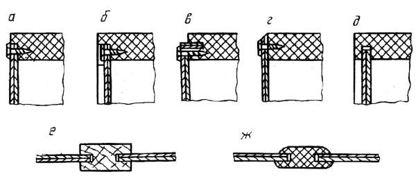
Рис. 69. Способы крепления (а-д) и соединения (е, ж) задних стенок: а-в – в фальц шурупами; г – внакладку шурупами; д – в паз; e – соединение деревянными брусками, ж – соединение пластмассовыми планками
В изделиях универсально-сборной мебели фальц может быть образован вставленной в кромку рейкой (на рис. позиция в).
Задние стенки в крупногабаритных изделиях делают составными, части соединяют деревянными или пластмассовыми планками. Стенки крепят по всему периметру шурупами с шагом 100-150 мм у неразборных изделий и 200-250 мм у разборных.
Важнейшим элементом мебельных изделий являются двери. В мебели двери являются главным элементом, который формирует фасад изделия и его внешний вид. Их конструкция и качество установки в большой степени определяют качество всего изделия. Качеству их изготовления, выбору облицовочных и отделочных материалов уделяется большое внимание.
Конструктивно двери выполняются щитовыми, рамочными, комбинированными, шторными, складными. Двери изготавливают из древесностружечных плит, облицованных различными материалами, а также из древесины хвойных и лиственных пород, фанеры, пластиков, стекла и т. д.
В зависимости от способа установки различают двери распашные, раздвижные, откидные, съемные или несъемные. В свою очередь распашные двери различают по положению относительно стенок корпуса. Притворы таких дверей (характер сопряжения со стойками и между собой) могут быть выполнены внакладку, в проем или комбинированно. Двери имеют соответствующие названия – накладные, вкладные, комбинированные.
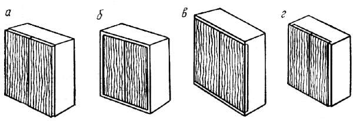
Рис. 70. Положение дверей относительно стенок: а – накладных; б – вкладных; в, г – комбинированных
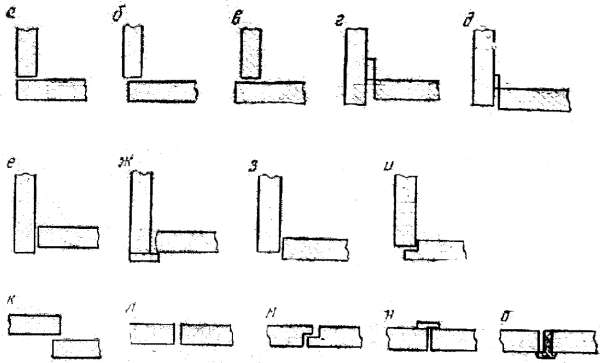
Рис. 71. Способы формирования притворов распашных дверей: а – внакладку заподлицо; б – внакладку с уступом; в – внакладку с выступом; г, е, ж – в проем с заглублением; д, з – в прием с выступом; и – в проем с наплавом; к – внакладку; л – заподлицо на гладкую кромку; м – заподлицо в четверть; н – заподлицо с притворной планкой; о – с притворным бруском
Притворы распашных дверей формируют по-разному. К стенкам внакладку притворы дверей не требуют подгоночных работ. Если изделия между собой блокируются, применяют притвор заподлицо или с уступом.
Притворы вкладных дверей к стенкам могут быть с заглублением, выступом или наплавом. Если установка дверей делается с технологическим зазором (на рис. позиции г, д), то подгоночные работы не выполнять не надо.
Друг к другу притворы дверей могут быть внакладку, заподлицо в четверть или на гладкую фугу с помощью притворной планки или бруска. Притворы внакладку также не требуют подгоночных работ.
Распашные двери навешивают на петлях разных типов. Стеклянные двери устанавливают всегда в проем с заглублением на пятниковых петлях.
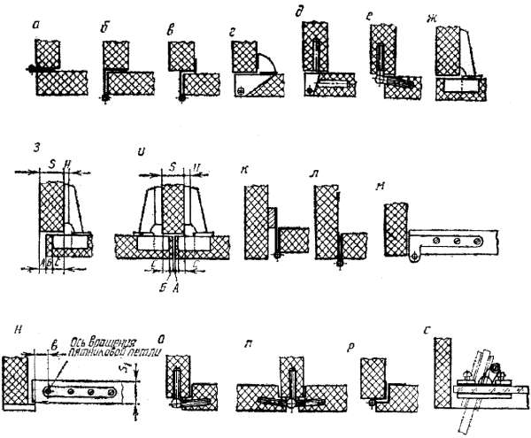
Рис. 72. Способы навешивания распашных дверей на петлях: а–г, к, л, р – карточных одношарнирных; д, е, о, п – стержневых одношарнирных; ж–и – четырехшарнирных; м, н, с – пятниковых одношарнирных
При установке дверей внакладку с уступом на четырехшарнирных петлях под петлю необходимо ставить подкладку толщиной Н = (А + Б + С) – S, а при установке смежных дверей – толщиной Н = (0,5А + Б + С) – 0,5S (на рис. позиции з, и). Ось вращения одношарнирных прямых петель должна отстоять от внутренней кромки стенки на расстоянии 0,5S + 2 мм (на рис. позиция к).
Количество петель принимают минимальным, обеспечивающим необходимую прочность, жесткость и предотвращение коробления щитов. Длина рояльных петель равна длине притворной стороны двери, пятниковые крепят к торцам дверей, поэтому их всегда две. В мебели при длине дверей до 800 мм прочих петель ставят две, а при увеличении длины на каждые 500 мм добавляют еще по одной.
Как правило, столярные двери устанавливают на две петли.
Раздвижные двери не требуют при открывании свободного пространства. Их устанавливают в специальных направляющих из древесины, пластмассы, металла, а также в пазах, выбранных непосредственно в горизонтальных щитах. Двери больших размеров устанавливают на роликах.
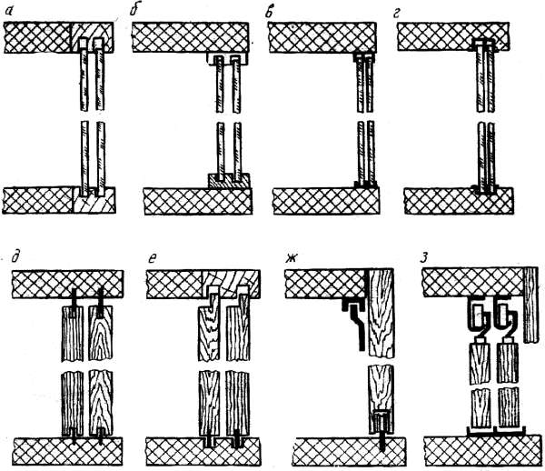
Рис. 73. Установка раздвижных дверей: а-г – изготовленных из стекла, фанеры, ДВП, пластика; д-з – из столярных и древесностружечных плит
Чтобы двери можно было вставлять и вынимать из лазов не разбирая изделие, глубину верхнего паза делают на 1-2 мм больше двойной глубины нижнего.
Шторные двери являются разновидностью раздвижных. Они представляют собой ряд узких реек, которые наклеены на плотную ткань или нанизаны на тонкую стальную проволоку. Перемещаются двери в фигурном пазу.
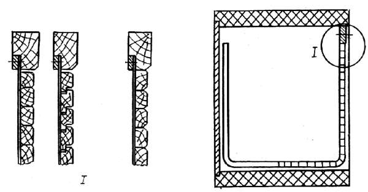
Рис. 74. Схемы шторных дверей
При изготовлении секретерных, барных и антресольных отделений шкафов практикуют установку откидных дверей. Их навешивают на рояльные, карточные одно– и двухшарнирные стержневые петли. В откинутом положении они поддерживаются кронштейнами.
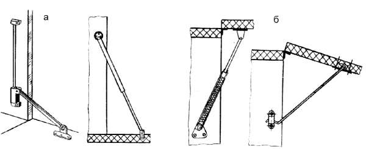
Рис. 75. Схемы установки кронштейнов откидных дверей: а – секретеров и баров; б – антресолей
Складные двери состоят из отдельных частей, соединенных шарнирно и способных перемещаться в плоскости и вокруг оси. Складные двери могут быть комбинированными (например распашными и раздвижными).
Чтобы зафиксировать двери в определенном положении, а также для их запирания применяют замки, задвижки, защелки, магнитные держатели. Прирезные замки устанавливают заподлицо с поверхностью откидных дверей или врезают в пласть, накладные замки крепят к внутренней пласти двери, врезные замки врезают в кромку. Защелки, задвижки и магнитные держатели устанавливают на внутреннюю пласть дверей.
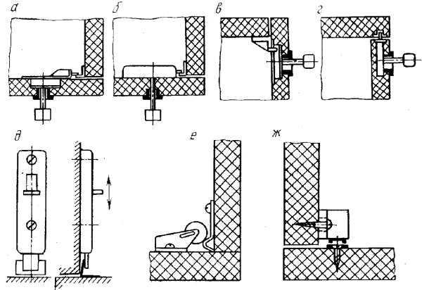
Рис. 76. Схема установки запорной фурнитуры: а–г – замков; д – задвижек; е – защелок; ж – магнитных держателей
Полки в зависимости от назначения и размеров изготавливают из древесностружечных плит, фанеры, плоскоклееных и гнутоклееных элементов, стекла. В мебели стеклянные полки предназначаются для размещения декоративной посуды, их устанавливают за стеклянными дверями. Толщину стекла S принимают в зависимости от длины полки l. Так, при l = 400, 500, 600-700, 800-1000 мм S = 3, 4, 5, 7 мм соответственно. Толщину полок для установки столовых сервизов необходимо увеличить.
Устанавливают полки на деревянные и пластмассовые планки, на металлические и пластмассовые полкодержатели. Углубление в полке выполняет роль ее фиксатора.
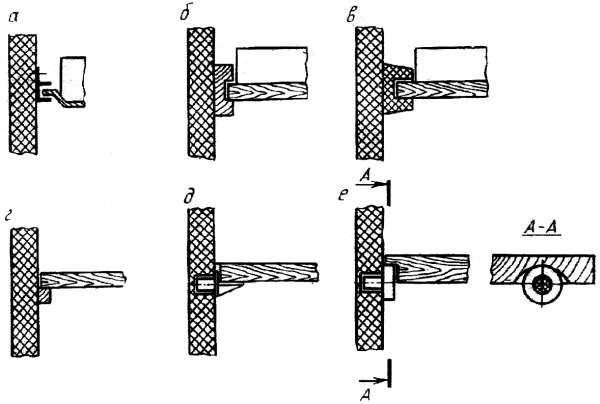
Рис. 77. Способы установки полок: а–в – выдвижных на направляющих планках; г – стационарных на планках; д, е – стационарных на полкодержателях
Конструктивно ящики и полуящики могут быть столярными, гнуто-клееными, гнуто-пропиленными, пластмассовыми. Устанавливаются они с помощью пластмассовых и деревянных направляющих планок, которые крепятся к стенкам шурупами. Чтобы устранить трение боковых стенок ящиков о стенки корпуса на последние иногда ставят дополнительные направляющие планки (на рис. позиции е, л). Планки крепят также и ко дну широких ящиков для предупреждения перекоса при перемещении (на рис. позиция н).
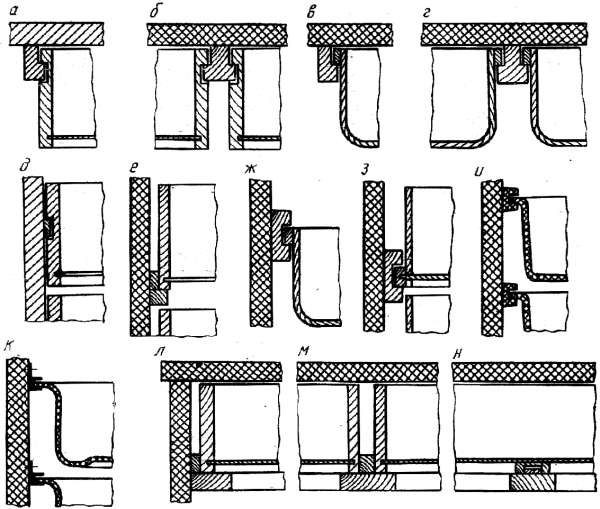
Рис. 78. Способы установки ящиков и полуящиков на направляющих планках
Выдвигают ящики примерно на 2/3 их длины. Если этого недостаточно, ящики устанавливают на телескопических металлических направляющих с роликами.
При установке зеркал поступают так, чтобы при необходимости их можно было снять. Важно защитить внутреннюю сторону зеркала от механических повреждений. Для защиты стороны, на которую нанесена амальгама, между ней и подзеркальником оставляют воздушный зазор. При установке накладных зеркал зазор обеспечивают применением эластичных шайб из резины, фетра, полиэтилена и др. материалов (на рис. позиция а), вкладных – конструктивным просветом между зеркалом и филенкой (на рис. позиция б).
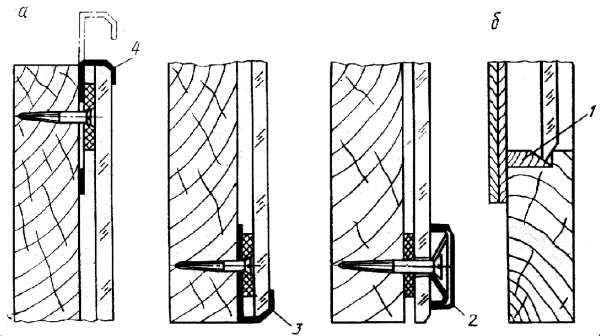
Рис. 79. Крепление зеркал: 1 – брусочек; 2, 3, 4 – держатели
Накладные зеркала крепятся пластинчатыми или винтовыми держателями (кляммерами), на каждую сторону зеркала ставят по два держателя. На нижнюю сторону ставят стационарные держатели, а на остальные – передвижные, что позволяет при необходимости снять зеркало. Вкладное зеркало крепят небольшими брусочками и закрывают филенкой.
Часто предметы мебели дополняются различными изделиями функционального оборудования. Имеются в виду различные вешалки, емкости для хранения мелких предметов, подставки для обуви, галстукодержатели, стеклянные полки и т. п. В кухонной мебели предусматривается установка различных контейнеров и емкостей, бытовой техники. Как правило, изделия функционального назначения размещают на дверях, стенках корпусной мебели. Некоторые из перечисленных изделий изготавливают как самостоятельные (полки, вешалки, ящики для обуви).
Любое мебельное изделие устанавливается на опоры. Ими служат коробки, скамейки, подсадные ножки. Опоры и соединения нижних горизонтальных щитов воспринимают все нагрузки, создаваемые изделиями и находящимися на них предметами. Эти нагрузки могут быть значительными, поэтому правильный выбор вида опор и способа их крепления имеет большое значение. Практика свидетельствует, что узел крепления подсадных ножек является одним из наиболее слабых мест мебельного изделия.
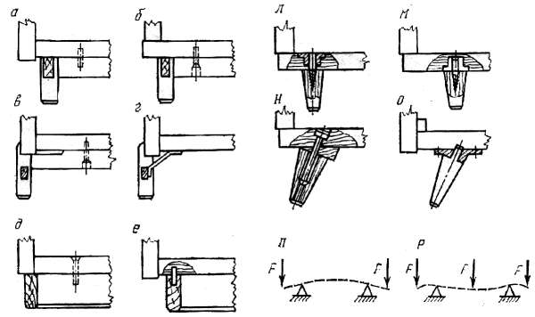
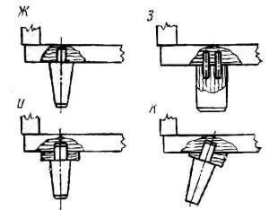
Рис. 80. Конструкции и способы крепления опор: а-г – скамеек; д, е – плинтусных коробок; ж-о – подсадных ножек; п, р – схемы прогиба нижнего горизонтального щита
В случаях, когда корпус изделия не имеет средней вертикальной стенки, все нагрузки приходятся на соединения нижнего горизонтального щита с боковыми вертикальными. Если при этом последние являются проходными, необходимо, чтобы опора перекрывала их нижние кромки, т. е. подпирала стенки (на рис. позиции в-д). Если опора сдвинута к центру, вся нагрузка будет восприниматься соединением нижней горизонтальной и вертикальной стенок (на рис. позиции а, е, о). Прочность этих соединений относительно невысокая из-за низкой прочности древесностружечных плит на растяжение перпендикулярно к пласти. Эти схемы установки опор нежелательны. Увеличить прочность соединения можно постановкой к вертикальной стенке бруска (на рис. позиция о).
В случае, когда подсадные ножки смещены далеко к центру, а в изделии есть только боковые вертикальные стенки, нижний горизонтальный щит прогибается (на рис. позиция п), что может вызвать заклинивание вкладных дверей. При наличии средней вертикальной стенки характер прогиба изменяется: он значительно уменьшается (на рис. позиция р).
В массивных и широких мебельных изделиях вместо ножек чаще применяются коробки или скамейки. При установке изделия опоры смещаются от его задней плоскости на 35-50 мм (учитывается наличие плинтуса в помещениях).
Понятно, что в качестве опоры более надежными являются коробки. Для их изготовления может применяться древесина хвойных пород или древесностружечные плиты.
Опорные скамейки изготавливают из цельной древесины, из металла или комбинированными (из древесины, металла, пластмассы). Подсадные ножки делают из древесины, металла, пластмассы, а крепят с помощью шипов, винтов, стяжек и фланцев. Подсадные ножки могут быть стационарными или съемными.